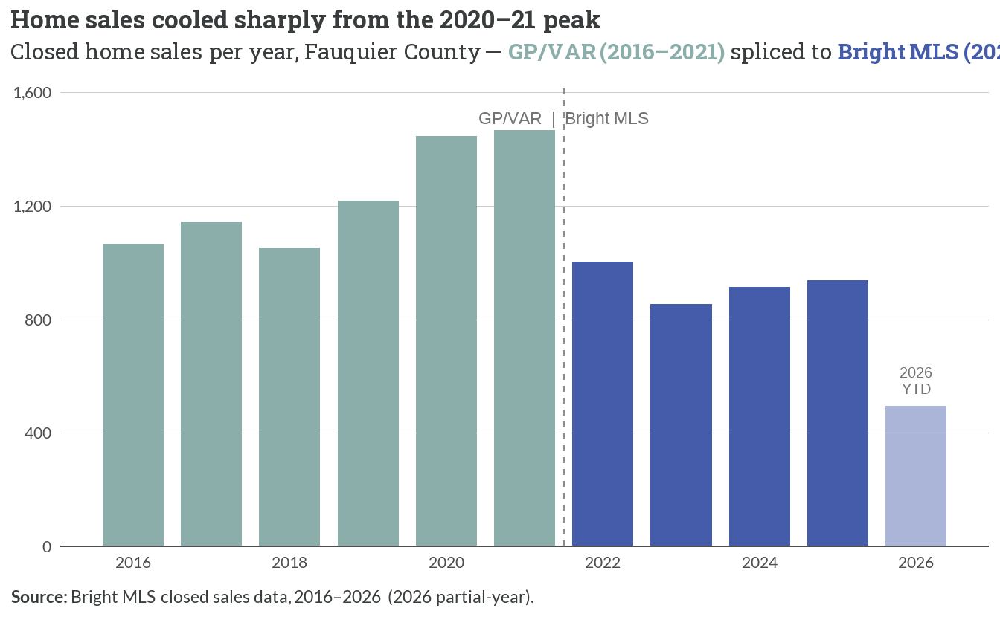
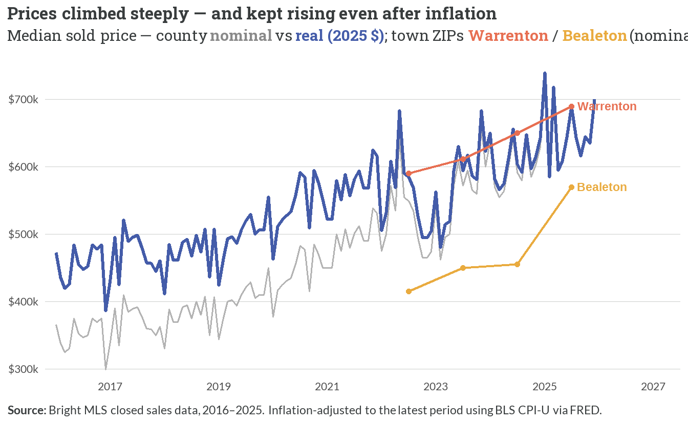
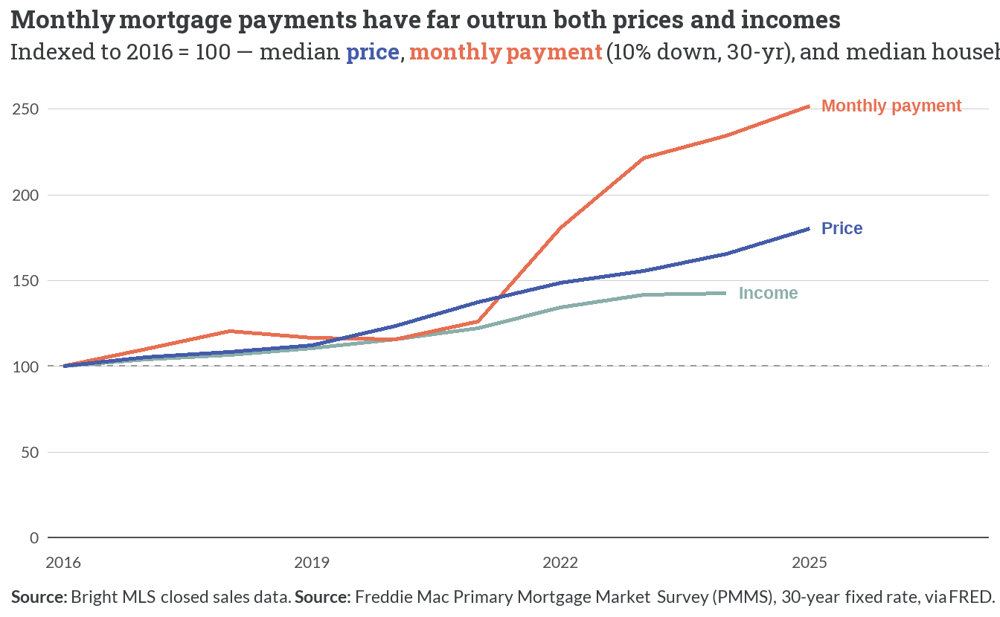
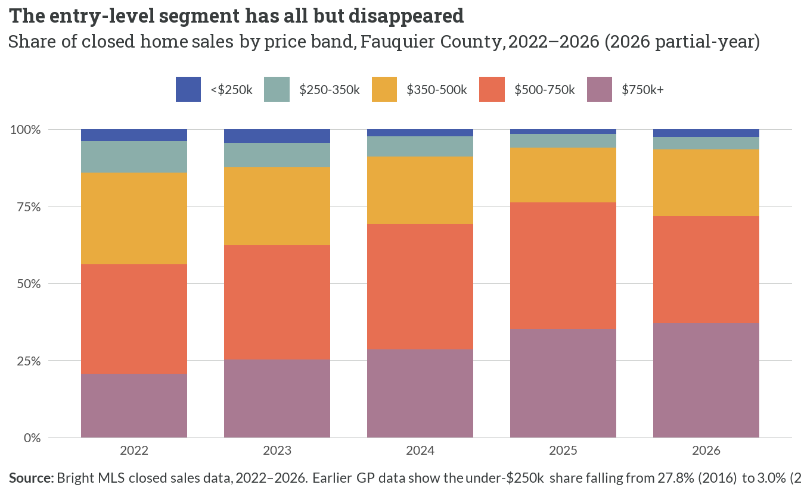
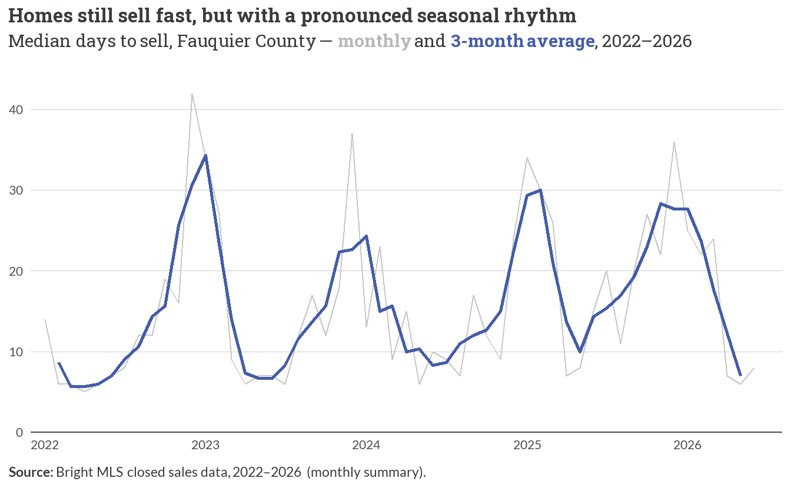
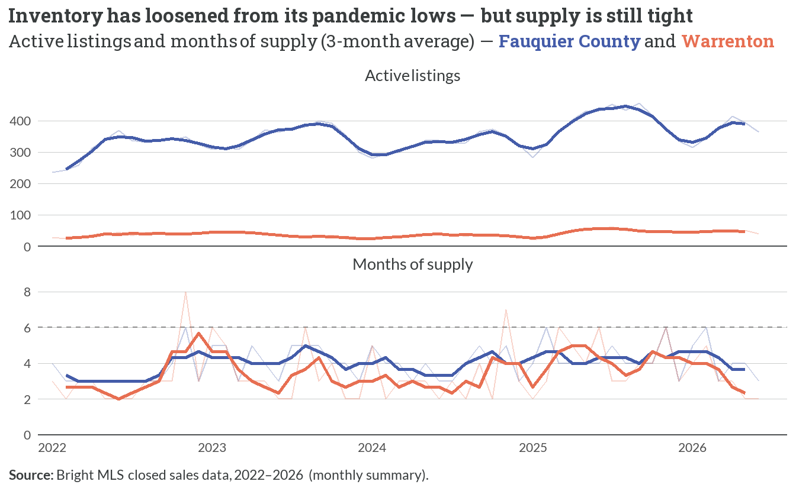
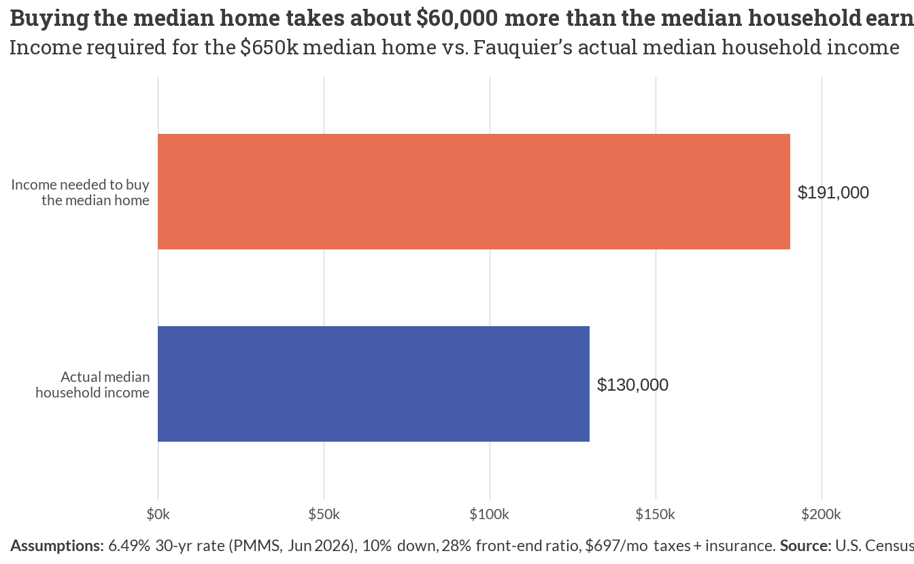

3 The For-Sale Market
3.1 Sales volume
- Sales peaked at 1,466 in 2021 and have since fallen to 938 in 2025 — down about 36% from the pandemic-era high.
- The cooling reflects thin supply and higher financing costs, not falling demand — prices kept climbing through the slowdown (Figure 3.2).
- Counts through 2021 come from the GP/VAR annual series and 2022 onward from Bright MLS; 2026 is a partial year-to-date count and is not comparable to the full years.
NoteA note on sales counts
Bright MLS’s published monthly summary reports roughly 20% more sales than the transaction-level export used for the volume series above (e.g. 1,127 vs 938 closings in 2025) — a near-constant level offset across every year, consistent with a property-type filter on the export. Median sale prices agree between the two sources to within ~0.1%, so the price findings are unaffected; the level of sales counts (and the active-listing snapshot below) should be read as the export’s narrower definition, while the year-over-year trend holds under either source.
3.2 Prices

- The county’s median sold price nearly doubled in nominal terms — about $360k (2016) to $650k (2025), +81%.
- Even after inflation, real prices rose from roughly $465k to $650k in 2025 dollars (+40%) — genuine appreciation, not just inflation.
- The town ZIPs track the county: Warrenton (~$690k in 2025) runs above Bealeton (~$570k). Town-ZIP series begin in 2022 because the county’s 2016–2021 monthly series is VAR (county-only).
3.3 Prices vs. payments vs. incomes

- Over 2016–2025 the median price rose +81%, but the monthly payment on that home rose +152% — the 30-year rate climbed from 2.9566667% (2021) to 6.5966667% (2025), compounding the price increase.
- Median household income rose only +43% through 2024 — far behind both, so buying power has fallen sharply.
- The pattern matches the GP study’s Figure 9 direction (GP: price +79%, payment +127%, income +35%); FHFH’s actuals run somewhat higher on all three but tell the same story — payments ≫ prices ≫ incomes.
3.4 Price segments

- Homes under $250k fell from 3.8% of sales in 2022 to 1.6% in 2025; everything under $350k is now barely 6% of the market.
- The $750k+ band has surged to 35% of sales (from 21% in 2022), and the modal band is now $500–750k (41%).
- This is the tail end of a long collapse: the GP study found under-$250k sales fell from 27.8% (2016) to 3.0% (2021) — the MLS-only view here (2022+) shows the entry level eroding the rest of the way.
3.5 Days on market & supply

- Homes sell fast — a median of 10–11 days in 2022–2024, rising to 21 in 2025 as higher rates cooled demand, but still weeks, not months.
- The monthly view exposes a strong seasonal rhythm the annual averages hide: listings linger roughly 25–40 days in December–February and sell in under 10 by spring, every year.

- Active for-sale inventory has climbed from a tight ~315 listings a month in 2022 to ~392 in 2025, and months of supply from about 3.4 to 4.3 months — a real loosening from the pandemic-era squeeze.
- Even so, supply stays well below the roughly six-month mark that separates a seller’s from a buyer’s market: Fauquier remains a seller’s market, just a less extreme one than at the 2021–22 peak.
NoteInventory is recovering, not recovered
Contrary to a point-in-time reading, the monthly Bright MLS series shows active listings and months of supply trending upward since 2022 (from ~3.4 to ~4.3 months) as higher rates slowed the frantic pace — but Fauquier is still firmly a seller’s market, with supply short of the ~6-month balance point and homes selling within weeks for most of the year.
3.6 What it takes to buy

- Affording the $650k median home requires about $190,586 in household income under standard underwriting — versus Fauquier’s actual $130,189 median, a gap of roughly $60,000.
- The gap is driven by the same forces as Figure 3.3: high prices and a 6.49% mortgage rate.
- This figure reuses the affordability parameters from the gaps analysis so Chapters 3 and 4 reconcile; the full owner/renter gap by income band is developed in Chapter 5.
3.7 What the interviews said vs. what the data shows
ImportantInterview validation
- “Only about 3 for-sale listings under $350,000 were on the market (April 2026).” Confirmed. The July 2026 listing export shows exactly 3 of 218 active listings priced under $350,000 (Figure 3.4) — the entry-level for-sale segment has effectively vanished. (The 218-listing export is the narrower property-type subset noted above; Bright MLS’s published count for the county runs higher, but the near-total absence of sub-$350k inventory holds regardless.)
- “Homes are expensive relative to what local incomes can support.” Confirmed and nuanced. Median prices nearly doubled since 2016 and rose in real terms (Figure 3.2); the income needed to buy the median home now exceeds the actual median by ~$60k (Figure 3.7). The squeeze is amplified by financing: monthly payments rose far faster than prices or incomes (Figure 3.3).
- “Buyers face a quality-versus-price mismatch — what’s affordable isn’t desirable, and what’s desirable isn’t affordable.” Confirmed and nuanced. New construction skews larger and pricier (Chapter 1), the sub-$350k segment has all but disappeared (Figure 3.4), and the market still moves fast (Figure 3.5) — leaving entry-level buyers with few options at any quality level.